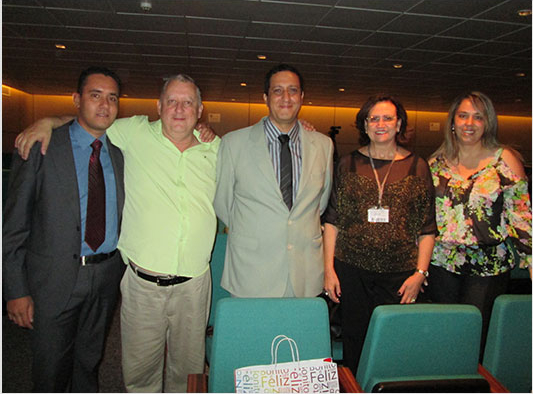
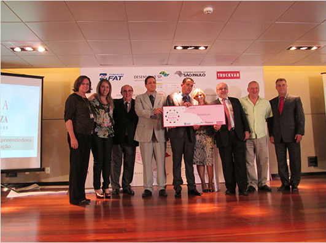

Isenção/redução da taxa - Vestibular 2º Semestre 2016
Postado por: Admin
A inscrição para isenção ou redução de taxa para o Vestibular do 2º semestre de 2015 encontram-se abertas pelo site vestibularfatec.com.br até o dia 11 de março de 2016.
Fatec Franca: venha estudar com a gente!
Podem participar os funcionários do Centro Paula Souza e candidatos que comprovarem sua condição de pobreza, com renda familiar de, no máximo, R$ 350,00 (trezentos e cinquenta reais) por pessoa.
Documentos necessários:
Documento de identidade (RG);
CPF;
Comprovante de renda;
Comprovante de residência;
Registro funcional (para funcionários do CPS).
Reconhecimento
Cerimônia de Premiação Desafio Inova 2013 - Ideias & Negócios
Postado por: Inova Fatec Franca
Na quinta-feira, dia 06 de fevereiro de 2014, ocorreu na sede do Centro Paula Souza em São Paulo, cerimônia de premiação com entrega de cheques-diploma para as 30 (trinta) equipes finalistas do Desafio INOVA Paula Souza: de Idéias a Negócios, dentre os 1057 projetos inscritos em agosto de 2013.
O aluno do curso de ADS, Jônatas de Souza Santos, e os professores orientadores (mentores) Tadeu Artur de Melo Júnior, Antônio Fernando Traina e Maria Rafaela Junqueira Bruno Rodrigues, estiveram presentes no evento, junto à diretora da Fatec Franca, Profa. Dra. Isabel Cristina Buttignon.

A equipe da Fatec Franca, na cerimônia de premiação
O projeto intitulado “Presto Score: softwares e soluções para transcrição musical” também teve a participação do aluno Túlio Marcos de Rezende Navarro (ADS), sendo classificado em 2º lugar no eixo tecnológico Produção Cultural e Design, na competição de modelos de negócios usando a plataforma CANVAS.
Dentre as autoridades presentes no evento destacaram-se as presenças do Secretário de Desenvolvimento Econômico, Ciência, Tecnologia e Inovação, Rodrigo Garcia; a superintendente do Centro Paula Souza, Laura Laganá e seu vice César Silva; além do Dr. Osvaldo Massambani, coordenador da Agência Inova Paula Souza.

O aluno Jônatas de Souza Santos, recebe o prêmio das mão da superintendente do Centro Paula Souza, Laura Laganá
No dia 20 de fevereiro de 2014 teremos a entrega dos certificados para as equipes regionais participantes premiadas e as que receberam menção honrosa no Desafio Inova 2013. A FATEC Franca tem além da equipe desenvolvedora do Presto Score, outras cinco que irão receber certificado como de menção honrosa. O Demo Day está sendo coordenado pelo prof. Marcelo Squilante (ETEC) e será realizado no teatro da ETEC Júlio Cardoso, as 21h00.